第 3 章 建模核心工具：做一只马克杯
场景：这一章你第一次真正"进去捏"模型：把一根圆柱，几步捏成一只带手柄的马克杯。学完它，你已经会了 80% 日常建模所用的工具。
这一章的正确打开方式：别只看。打开 Blender，跟着下面七步亲手做一遍——大约半小时后，你的桌上就会多出一只自己做的杯子。每一步都写了"做成什么样算对"，卡住了，先读该步骤末尾的提醒，再看图。
学完你会
读完并能动手做完本章，有几样手艺会稳稳留在你手上：在编辑模式里自由切换"点 / 线 / 面"三种选择方式；用挤出给模型"长"出新的结构、用内插做出一圈内缩的边框、用倒角把锋利的边缘磨圆；以及最重要的一条——完整走通"从一根圆柱到一件作品"的全流程，做出本书的第一件作品：一只带手柄的马克杯。
核心概念：编辑模式的"四板斧"
上一章你在物体模式里搬桌子；这一章，你要拿起工具，进到桌子内部去改结构了。说起来吓人，其实日常建模翻来覆去就是四个动作，我把它叫"四板斧"：
| 工具 | 快捷键 | 一句话解释 |
|---|---|---|
| 挤出 Extrude | E |
把选中的面"拉"出来一段，长出新的身体 |
| 内插 Inset | I |
在选中面内部缩出一个小一圈的面（做杯口、边框的利器） |
| 倒角 Bevel | Ctrl+B |
把锋利的边磨圆——真实世界没有绝对锐利的边角 |
| 环切 Loop Cut | Ctrl+R |
横着加一圈线，为后续变形或细分做准备 |
在学具体操作之前，先记住一个底层习惯：先选，后做。 编辑模式里的每个动作，都要先告诉 Blender"我要动哪里"——按 1 选顶点、按 2 选边、按 3 选面，然后再按工具键。九成的建模操作，都是从"选中一个面"开始的。
跟着做：七步做一只马克杯
每张图都是这一步做完后真实渲染的样子，橙色是"这一步正在操作的面"。做之前先看一眼全流程总览——心里有了地图，中途就不会迷路：
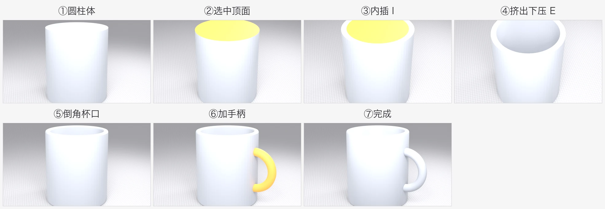
图 19 全流程一览：圆柱 → 选顶面 → 内插 → 挤出下压 → 倒角 → 加手柄 → 完成
第 1 步：从圆柱开始
杯子是圆的，所以从圆柱起步最省力。
- 新建文件（
Ctrl+N），Shift+A→ 网格 → 圆柱体； - 加完别急着点别处——左下角会弹出"添加圆柱体"面板（错过的话按
F9），把顶点数（Vertices）改成 64； - 位置不用动：圆柱默认立着、中心在原点。
顶点数决定圆柱有多圆。默认的 32 边其实也够用，但 64 边更细腻，现在多花的那点性能，后面做杯口圆环时你会感谢自己——这属于"赢在起跑线上"的操作。
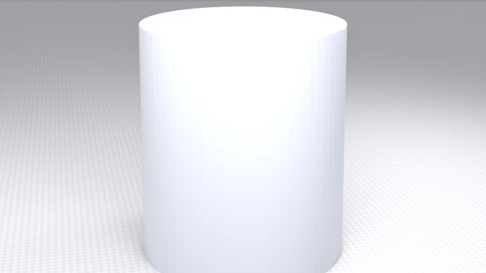
图 20 起点：一根普通圆柱
第 2 步：进入编辑模式，选中顶面
按 Tab 进入编辑模式，按 3 切到面选择模式，然后左键点击圆柱的顶面——就是顶上那个圆面。
这一步看起来最简单，其实是新手第一个坎：总是点不准。 诀窍是先把视角抬高一点，从斜上方往下看，顶面完整露出来了再点。选中的标志是那个面整体变色（在你屏幕上是橙色高亮）。
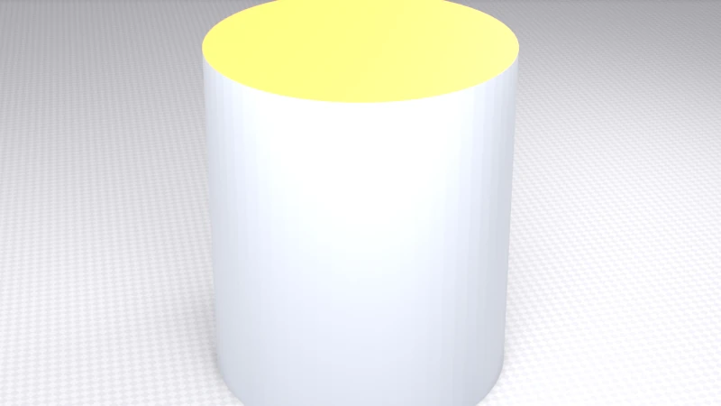
图 21 顶面被选中——你屏幕上的"选中"也是橙色高亮
下面这张是真实的 Blender 界面，反应的就是你此刻应该看到的样子：左上角写着"编辑模式"，顶面橙色。如果你只看到线框、看不到橙色面，检查两个地方：左上角是不是真的在编辑模式；按一下视口右上角的"叠加层"按钮看看有没有被关掉。
图 22 真实界面截图（本书自摄）：编辑模式 + 顶面选中，这就是这一步做完的样子
💡 点不中、够不着？ 按 Alt+Z 打开 X 光透视，模型变半透明，看穿一切；再按一次关掉。这是个"临时开挂"键，别一直开着——会误选到背面的点。
第 3 步：内插（I）——给自己缩出"杯口沿"
选中顶面后按 I，什么都不用管，直接移动鼠标：你会看到顶面里缩出了一个小一圈的内部边框，跟着鼠标变大变小。缩到杯壁厚度差不多——大约两三指宽的视觉比例——左键确认。
如果你更喜欢精确：按 I 之后直接键入 0.06 回车，它就是杯口沿的精确宽度；事后想改，左下角参数面板里随时调。
这一步的意义，是把一个"实心圆面"变成"一环边框 + 一块中心面"：外环将来就是杯口沿，中心面马上就要凹下去变成杯腔。
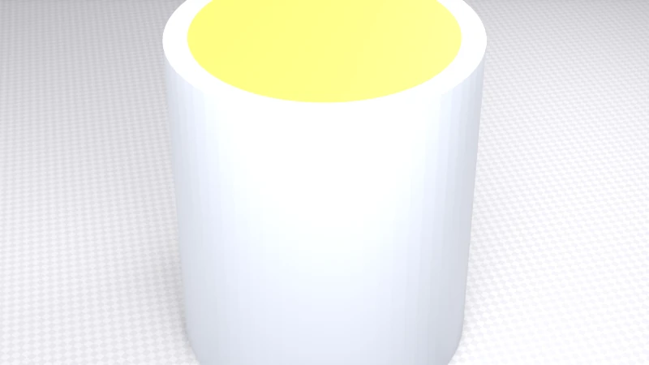
图 23 内插出一个同心的小面。这个小面接下来要"凹下去"变成杯腔
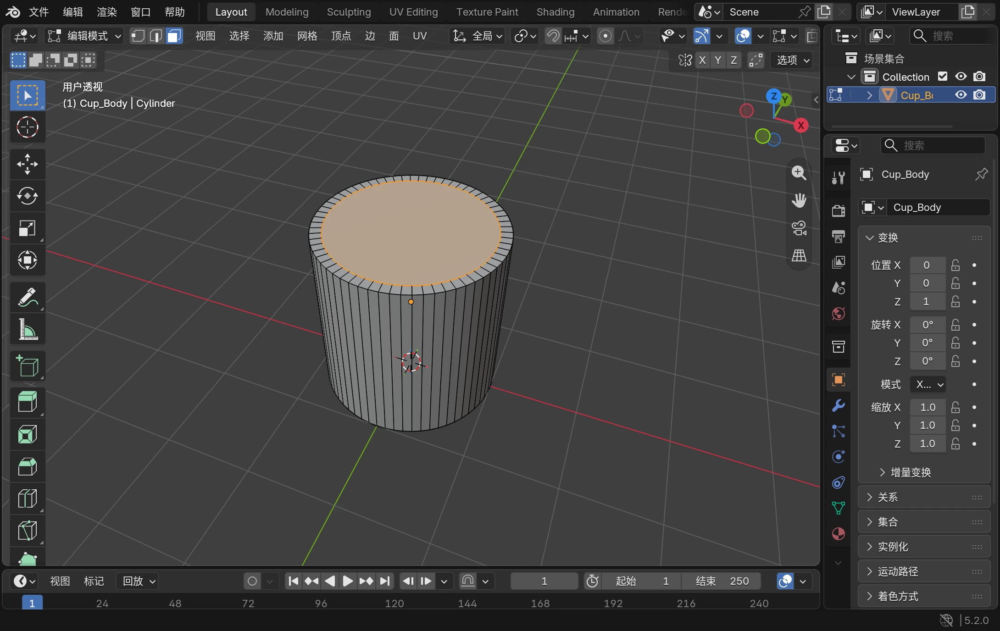
图 24 真实界面截图（本书自摄）：内插完成——外圈是杯口沿，中心面仍处于选中状态
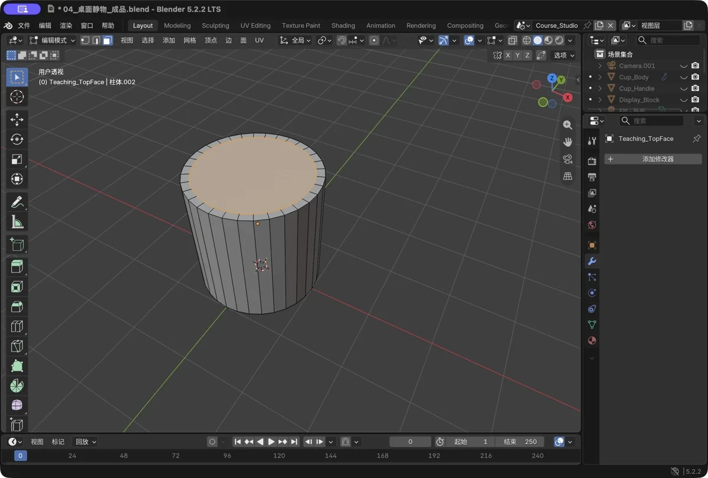
图 25 真实软件截图：换个角度看同一状态，中心面橙色高亮，等着你进行下一步
第 4 步：挤出下压（E）——挖出杯腔
杯子是空心的，接下来我们把中心面"压"进杯体里，挖出杯腔。
内插后的中心面还处于选中状态（如果不是，点一下选中它），然后：
- 按
E挤出——先别急着动鼠标； - 再按
Z，把移动锁在竖直方向； - 往下移动鼠标，看着中心面沉进杯体，压到接近杯底的位置停住——记得留出杯底厚度；
- 左键确认。
⚠️ 本步必错点：E 之后忘了按 Z，面会跟着鼠标乱窜去奇怪的方向。别慌也别硬凑：Esc 退出，多半会留下一点多余几何——直接 Ctrl+Z 撤掉整个挤出，从头来一遍，顺序永远是"E → Z → 移动"。
做对了，杯腔就出现了。转到斜上方看看，就能看到内壁和杯底：
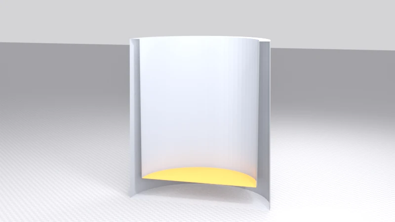
图 26 图中把杯子剖开一半方便你看清楚：内壁、杯腔、杯底厚度一次到位
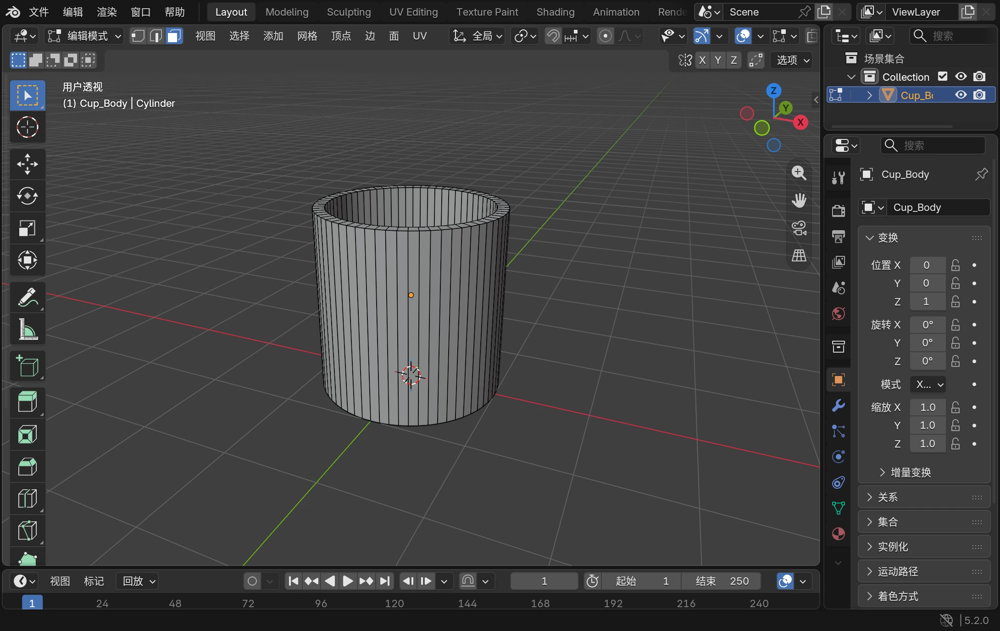
图 27 真实界面截图（本书自摄）：从斜上方看进杯腔——内壁、内底都在，杯子“空”了
第 5 步：倒角（Ctrl+B）——磨圆杯口和杯底
现在的杯口像刀片一样锋利，来把它磨圆。按 2 切到边选择模式，然后学一个高含金量的技巧——循环边选择：
按住 Alt，左键点一下杯口那条圆边——注意是一整圈同时亮起来，而不是你点的那一小段。这就是"点一条、选一圈"，几十条边一次到手。趁热打铁，按住 Shift+Alt 再点杯底的一圈边，两组一起选上。
然后按 Ctrl+B 启动倒角，轻轻移动鼠标——别贪，做成细巧的一圈过渡就好——再滚动滚轮把段数加到 2～3 段，左键确认。
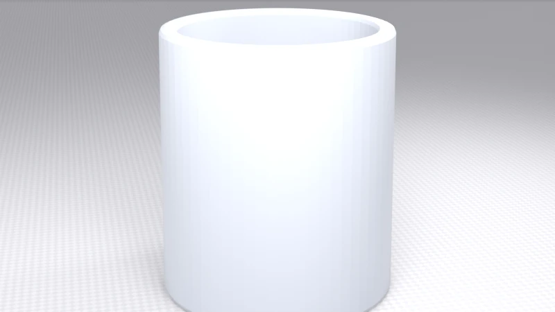
图 28 杯口外沿变得柔和了。图里不明显是正常的——倒角是"质感级"的细节
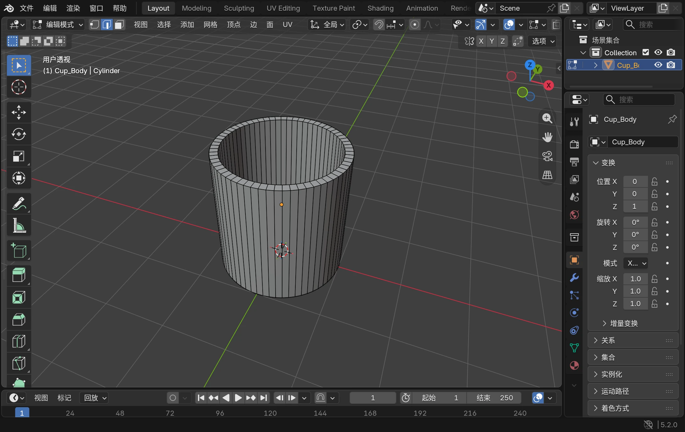
图 29 真实界面截图（本书自摄）：杯口的一整圈循环边被选中（橙色），等着倒角
💡 Ctrl+B 按了没反应？九成是两个原因：不在编辑模式，或者根本没选中边。先 Tab，再 2，再 Alt+左键——按这个顺序检查一遍。
第 6 步：加手柄
按 Tab 回到物体模式，我们来给杯子装耳朵。Shift+A → 网格 → 圆环（Torus），然后：
- 按
RX90Enter，把圆环从"平躺着"转成"立起来"； - 按
S缩小到合适的柄径——比如S0.6Enter，按你的杯子大小定； - 按
GX把它挪到杯壁旁边，让圆环有一半埋进杯壁里。
第 3 条是重点。手柄不是"贴"在杯子上的，是插在杯子里的——让圆环和杯壁真实相交，从外面看，就是一个浑然一体的把手。
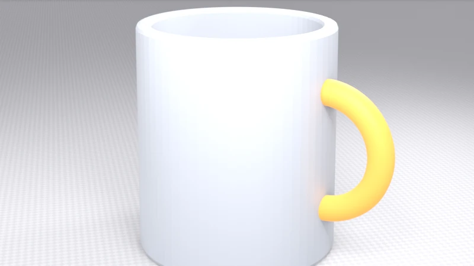
图 30 手柄（橙色示意）就位。真实手柄就是"埋进杯壁的圆环"
第 7 步：平滑着色收尾
最后一步，给它一份体面。左键选中杯身，右键呼出菜单 → 平滑着色（Shade Smooth）；手柄也照做一遍。你会发现杯身的明暗过渡瞬间顺滑了——同一个模型，用的还是那些面。
然后按 小键盘 0 切到相机视角，把相机对准杯子，按 F12——渲染！见证你自己做的第一件作品：

图 31 成品。从一根圆柱到一只杯子，你用的就是职业建模师每天用的那几招
💡 记得 Ctrl+S 保存。做到这里如果哪一步感觉不太对，可以打开 examples/ 文件夹里的 马克杯.blend 对照一下"标准答案"——它是由脚本一键重造的，第 8 章会讲其中的门道。
收工前的两个进阶动作（选修）
主线做完了，这两个动作属于"锦上添花"，做不做都不影响后面的章节。
检查一下：杯底到底留了多厚？
转着看容易看走眼，用正交前视图检查最准：按 小键盘 1 切正前视图，编辑模式按 Alt+Z 打开 X 光，框选内底那一圈顶点——看它离最下面的外底线差多少，那就是杯底厚度。检查完关掉 X 光，Tab 回物体模式。这一步只观察、不修改，是结束工作前的好习惯。
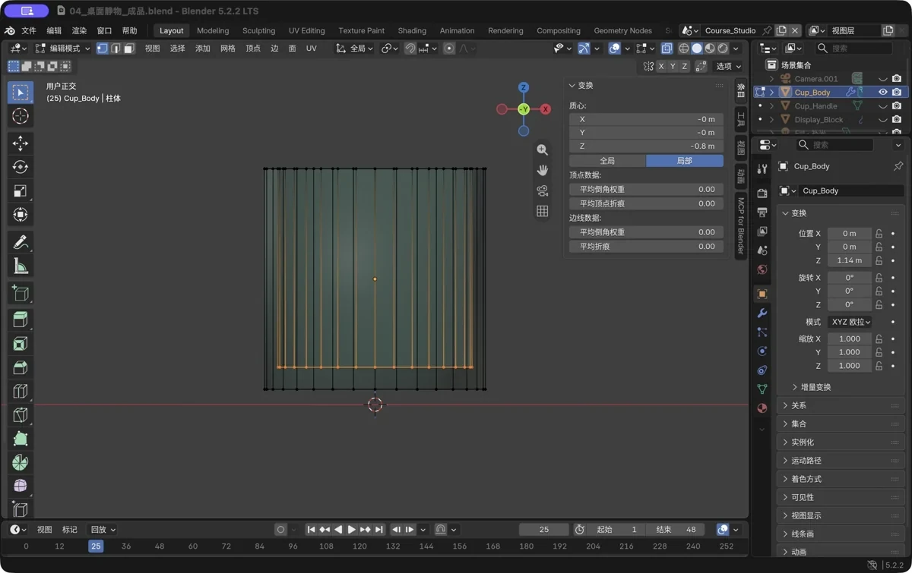
图 32 真实软件截图：橙色水平线是内底，它和外底之间的落差就是杯底厚度
更讲究的手柄：两只"针脚"插进杯壁的半环
第 6 步的完整圆环简单好用，但仔细看，它总有点"挂"在杯壁上的感觉。想要更真实，可以做半环手柄——让上下两个端口真正插进杯壁里（下面的数字都以示例杯为参考，按你的杯子等比缩放）：
Shift+A加一个圆环，主半径约为杯口半径的一半、次半径约为杯壁的一半，先让它平躺；小键盘 7切顶视图，Tab进编辑模式，按1切顶点模式，Alt+Z打开 X 光；- 框选左半边（X 小于 0）的顶点，按
X删除——留下来的是右半只弧； - 断口处是两圈开放的点：分别框选上、下两圈，各按一次
F补上面； - 回物体模式，
RX90Enter把它立起来，挪到杯壁旁——位置 X 比杯口半径略小一点，让端口埋进壁里； - 前视图核对：两个端口都藏进壁厚里。转动杯子看看杯腔——内部不露头，才算成功。
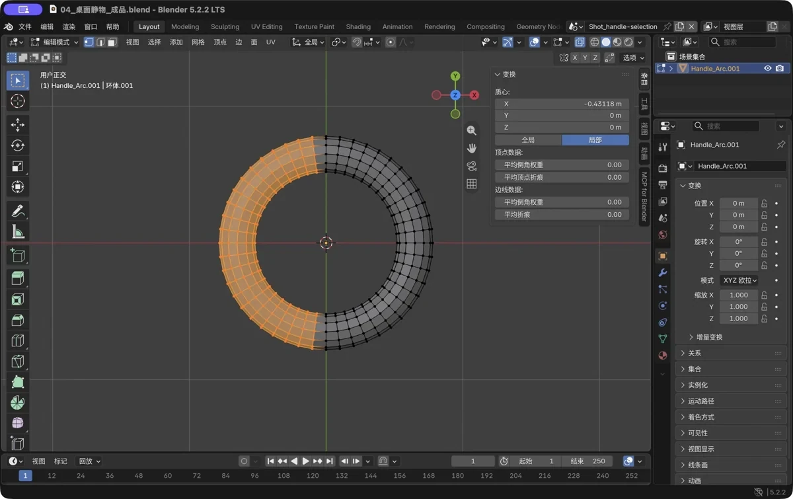
图 33 真实软件截图：X 光下框选左半边的顶点删掉，只留右半环
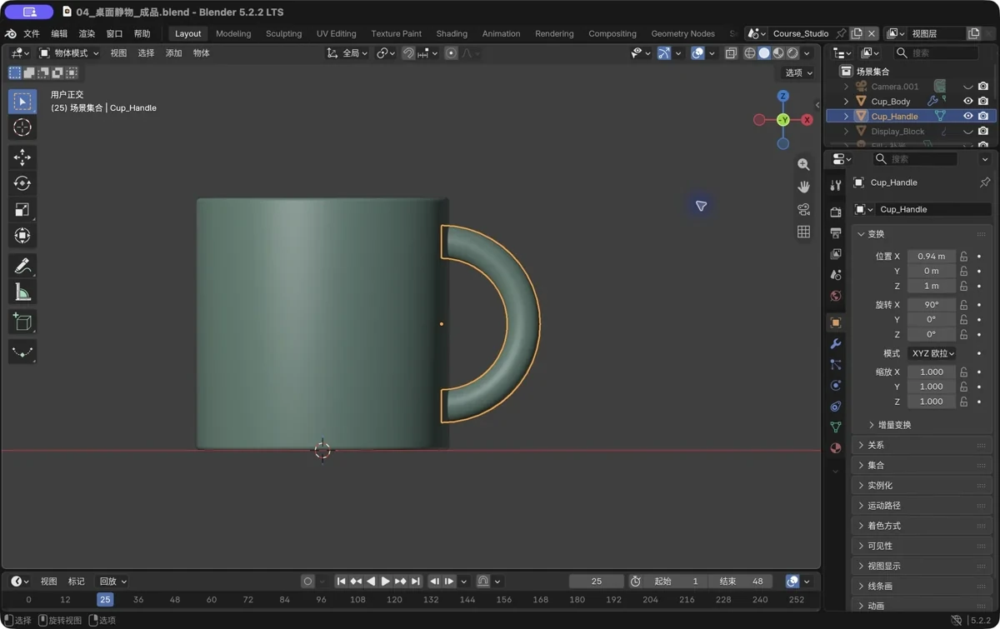
图 34 立起后放到位：两个端口都在杯壁里面——比一整个圆环"仿真"得多
新手常见坑
| 坑 | 说明 | 对策 |
|---|---|---|
Tab 没反应 |
没有选中物体 / 鼠标不在视口里 | 先左键点物体，再点视口空白确认鼠标位置，再按 Tab |
| 挤出后模型乱成一团 | E 后没锁轴 |
Ctrl+Z 撤回，重来：E → Z → 移动 |
E 之后按了 Esc |
想取消移动，但新几何其实已经生成了 | 别用 Esc 收场：直接 Ctrl+Z 撤销整个挤出，再重来 |
| 内插参数离谱 | 鼠标移动幅度太大 | 按 Esc 撤回重来，或 F9 面板里直接改数值 |
Ctrl+B 倒角把模型倒穿了 |
倒角量大于结构厚度 | Ctrl+Z 撤销，减小鼠标移动幅度 / 直接输入小数值 |
| 顶面点不中 | 视角太低看不到顶面 | 转视角从上方看（或 小键盘 7 俯视图） |
| 手柄插进杯腔里了 | 位置/大小没对 | 进编辑模式看剖切：手柄应只与"杯壁"相交，不要伸进腔体 |
| 渲染一片黑 / 什么都没有 | 相机没对准 / 没有灯 | 先跳过渲染，第 7 章专门教灯和相机，本章看到实物形状就行 |
过关标准
动手做完下面三件事，才算过这一章：
- 我独立做出了马克杯，杯腔、杯口沿、杯底都在，从上面能看到内壁；
- 我知道
E挤出和G移动的区别，挤出后记得先按轴向键再移动； - 选修动作至少试过一个：正交检查杯底厚度 / 半环手柄。
自检题
- 在编辑模式里切换"点/线/面"选择模式的快捷键分别是什么？
- "把顶面凹下去变成杯腔"用的是哪两个按键的组合操作？
Alt+左键点击一条边会发生什么？为什么它比逐条点边高效？- 倒角的目的用一句话说是什么？
- 如果想给杯子加"两圈竖向的装饰凹槽"，环切
Ctrl+R大概会怎么用？
答案见文末。
自检题答案
1顶点、2边、3面。E（挤出）后按Z（锁竖轴）向下移动；或等价地说是"内插后挤出下压"。- 选中整圈"循环边"（环形的连续边）；一整圈几十条边一次选中，不用逐条点。
- 把锐利的边磨成圆角，让模型更像真实世界的产品（同时改善渲染高光）。
- 切到边/面模式，
Ctrl+R把鼠标横放在杯壁上，滚轮加圈数（比如 4 圈），分段做凹槽或后续继续挤出细节。
小结
这一章你拿到手的，其实是整个建模世界的"最小操作集"：Tab 进出编辑模式，1/2/3 切换点线面，然后四板斧轮着用——E 长结构、I 做边缘、Ctrl+B 磨圆、Ctrl+R 加环线；选边的时候别忘了 Alt+左键 点一条选一圈。
马克杯的这七步流程，值得你在心里复盘一遍：圆柱 → 选顶面 → 内插 → 挤出下压 → 倒角 → 加环（手柄）→ 平滑着色。之后的每个模型，基本都是这个流程换对象、换参数而已。
最值得高兴的是：做完这一章，你已经从"看"进入了"做"。这件作品现在只差灯光和相机——第 7 章，我们会把它变成一张真正的成品图。